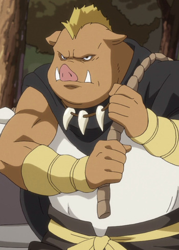

|  |
Geld |
That Time I Got Reincarnated as a Slime |
Geld is an orc who served as one of Orc Lord's bodyguard. He is also the lord of tother High Orcs in Tempest and a commander of its army. Geld is very caring and concerning. He is the most docile and hardworking among all of Rimuru's subordinates. |
 |
Kairi Shishigou |
Fate/Apocrypha |
Kairi Shishigou is the master of Saber of Red in Great Holy Grail War. He is seventh generation head of the Shishigou family. he has a lot of affection towards his stepdaughter. He has a good relationship with Saber of Red. |
 |
The Knight |
Gosick |
The Knight is one of the four passengers who accompany Victorique and Kazuya in train cabin. He is a bruly man. |